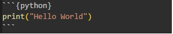

Session 0.2
Notebooks, and Extensions, and Bears, Oh My!
Recap
So far today we have introduced you to:
- VS Code
- A powerful text editor
- Quarto
- A powerful document generation tool
- Markdown
- A simple way to write text
- Yaml
- A simple way to write metadata (to tell the computer how to process your text)
- Paths
- A way to tell the computer where to find things so you can include them in your document
Recap
And you’ve done some things with them:
- You’ve created some new .qmd files
- You’ve written some Markdown
- You’ve written some Yaml
- You’ve embedded links and images
- You’ve created a bibliography
This Session
Firstly I just genuinely want to reassure you
- There’s no bears in this session
- You’re doing really well
- It’s meant to be enjoyable, but it’s also meant to be challenging
- So don’t forget that you’re here to learn, not to already be an ‘expert’
This Session
This session we’re going to ‘wrap up’ the basics of Quarto
- We’re going to talk about another type of file call a Jupyter Notebook
- We’re going to talk about how you can use premade templates to make your life easier
- Templates for APA style
- Or for specific journals
- We’re going to look at some other YAML options that will be useful to you
- Like a full ‘author’ field (with affiliation, email, etc)
- Or and ‘abstract’ field (for your abstract…)
- We’re going to talk a little more about Quarto Terminal Commands (Like
quarto render...)
Recap Quiz
But first! There’s a recap quiz!
So lets take a few minutes so you guys can use the quiz to practice recalling what we’ve covered so far
Recap Quiz
Don’t forget:
- The really annoying thing about windows (‘\’) vs mac (‘/’) paths!
- The difference between a ‘relative’ and ‘absolute’ path
- What the ‘./’ and ‘../’ at the start of a path means
- The use of ‘[]’ brackets in multiple different contexts (like for links, images, and citations)
- The ‘@key’ syntax for citations
- The ‘---’ syntax for YAML
Including code
So far we’ve talked about writing in Markdown, and we’ve talked about writing in YAML, but we haven’t talked about writing in code yet.
Don’t worry, we’re not going to make you write code today (we promised you that). However, we are going to talk about how you can include code in your Quarto documents.
There’s two (main) ways to do this:
- You can include code in a ‘code block’
- You can include inline code
Let’s talk about code blocks first
Including code
In order to make a code block, you need to use three backticks
```
at the start and end of your code block. The backticks are usually located on the top left key of your main keyboard, to the left of the ‘1’ key and just below the ‘Esc’ key.
There’s some annoying things about typing backticks, that we need to talk about first though.
Annoying thing about backticks
Depending on the operating system, and the language of the keyboard you need to type backticks differently; for example:
- On a irish windows keyboard the first time you press the key nothing happens…
- If you press the key twice you get 2 backticks
- If you press another key after the first backtick you get:
- a special character like ‘á’ or ‘é’
- or a backtick and the key you pressed like `
{
- If you just want 3 backticks you need to press the key 3 times and then follow it with a space
- On a US windows keyboard or a mac keyboard you get a backtick the first time you press the key
Annoying thing about backticks
This is because that’s how windows computers handle languages that have diacritics (like Irish).
So if you want to type a letter with a fada (like á) you press the key once, and then press the key you want to add the fada to.
Which… is good to know, but it does make typing backticks a little annoying.
Now that we have that out of the way, let’s look at some code blocks.
Including code
Here’s an example of a code block:
Including code
Let’s zoom in on that a little bit:
The components of a code block are:
- The three backticks at the start and end of the code block
- The language of the code block (in this case ‘python’) enclosed incurly braces
{ } - The code itself
- The three backticks at the end of the code block (no need for the language again)
Including code
You can use code blocks to include code in any language you like, and Quarto will do it’s best to format it correctly.
If it is one of the languages that Quarto knows about (like Python, R, or Julia) it will not only do a good job of formatting it for you, it will even run (called evaluate) the code for you (if you ask it to).
It will also include the output of the code block in the final document, so you can see the results of your code. This is how we can write the whole paper, including the analysis and results, in one document.
Including code
The other way to include code in your document is to use inline code.
This is where you include code in the middle of a sentence, like this:
Including code
Let’s look at that a little more closely:
`{python} some_code`
- For inline code you use 1 backtick to ‘open’ the code snippet
- Then you need to include the language of the code in curly braces
{python} - Then whatever expression you want to include inline
- Then 1 final backtick to ‘close’ the code snippet
Including code
OK so now you know how to:
- Include code in a code block
- Include code inline
You can use this to transition between writing human readable text, and writing code, in the same document. Imagine being able to just write code that details the demographic data of your participants, and then include that data in a table in your paper without having to copy and paste it from one document to another.
Including code
We’ll talk a lot more about writing code and the ‘options’ use within code blocks as we go on, but for now, let’s move on to talking about Jupyter Notebooks.
Jupyter Notebooks
A Jupyter Notebook is a type of file that allows you to write code, and text, and images, and tables, and all sorts of things in one document.
It’s a really powerful tool for writing up your research, because it allows you to write the code that you used to analyse your data, and then include the results of that analysis in the same document.
But wait… isn’t that what we just said about .qmd files?
Well yes, but Jupyter Notebooks are a little different.
Jupyter Notebooks
A Jupyter Notebook is a file that allows you to run code ‘live’ in the document, so you don’t need to preview or render the document to see the results of your code.
Rather than trying to ‘explain’ it’ll be easier to show you an example.
If you go to the ‘Day 0’ tab on Brightspace, and open the ‘Session 0.2’ folder, you’ll see a file called ‘example_notebook.ipynb’.
sidenote: the word ‘Jupyter’ is a portmanteau of ‘Julia’, ‘Python’, and ‘R’, the three languages that Jupyter Notebooks were originally designed to work with. The history of Jupyter Notebooks is really interesting, but it’s a little outside the scope of this course.
Jupyter Notebooks
If you open the ‘example_notebook.ipynb’ file you’ll see a document like this (remember yours might be a different colour):

Jupyter Notebooks
Let’s zoom in on that a little bit:
At the very top of the notebook you’ll see a toolbar with a number of buttons.

- The ‘+ Code’ button allows you to add a new code cell
- The ‘+ Markdown’ button allows you to add a new markdown cell
- The ‘Run All’ button allows you to run the code in the cells in order
There are other buttons, but we’ll talk about them later.
Jupyter Notebooks
Jupyter Notebooks are made up of cells, a cell is kind of like one of quartos ‘code blocks’ but a Jupyter cell can be a Raw Cell, a Markdown Cell, or a Code Cell.
- A Raw Cell is just text, like a markdown cell, but it’s not formatted as markdown
- A Markdown Cell is text that is formatted as markdown
- A Code Cell is a cell that contains code that can be run ‘live’ (we’ll talk about what that means later)
Let’s start by looking at a Raw cell
Jupyter Notebooks
A Raw cell is just a cell that contains text which will be ‘read’ by the computer, but not formatted as markdown(or code).
For our purposes, this is where we put the YAML in a Jupyter Notebook, Quarto can identify the Raw text as YAML if we use the --- syntax and then follow the YAML rules.

You can see that the word ‘Raw’ is in the bottom left of the cell.

Jupyter Notebooks
A Markdown cell is a cell that contains text that is formatted as markdown. You use exactly the same syntax as you would in a Quarto document, so you can include links, images, tables, and all the other things you’ve learned about today.

You can see that the word ‘Markdown’ is in the bottom left of the cell. When you hover over the cell you’ll see a little ‘tick’ icon appear in the top right of the cell. If you press that it’ll preview the cell without having to render/preview the whole document.

Jupyter Notebooks
And finally, a Code cell is a cell that contains code that can be run ‘live’.

You can see that the word ‘Code’ is in the bottom left, and if you hover over the cell, you can run it by pressing the little ‘Play’in the top right of the cell. Or you can press ’Ctrl+Enter’ on your keyboard to run the cell.

And you’ll see the output of the code immediately below the code cell.

Jupyter Notebooks
So, in a Jupyter Notebook you can write text, and code, and images, and tables, and all sorts of things in one document.
The document is ‘live’ in the sense that you can run the code in the document and see the results immediately, although some things, like inline code in markdown cells won’t show up until you use quarto to ‘render’ or ‘preview’ the document.
Jupyter Notebooks
A jupyter notebook has the file extension ‘.ipynb’ which stands for ‘Interactive Python Notebook’, this is a legacy of where the notebooks came from, so don’t worry about that for right now.
So let’s practice making your own Jupyter Notebook.
First, spend a few minutes playing around with the ‘example.ipynb’ that you downloaded from Brightspace, and then:
- In vscode, go to the Day 0 Folder in the explorer pane (the one on the left)
- Then right click on the ‘Day 0’ folder and select ‘New File’
- Immediately type ‘my_notebook.ipynb’ and press enter
And boom! You’ve created a new Jupyter Notebook, play around with making different cells, try adding some markdown (incluiding links and images), and play around with YAML in a Raw cell.
Extensions
No you know about:
- VS Code as a powerful Text Editor
- Quarto as a powerful Document Generation Tool
- Markdown as a simple way to write text which can be formatted effortlessly
- YAML as a simple way to write metadata to tell the computer how to process your text
- Paths as a way to tell the computer where to find things so you can include them in your document
- Code blocks and inline code
- Quarto Markdown (.qmd) and Jupyter Notebook (.ipynb) files
But all of this has been somewhat manual, but what about all this ‘Automated’ stuff we promised you?
Extensions
This is where Quarto Extensions come in.
In essences these Extensions are ‘bundles’ files containing things like the ‘Citation Style Language’ (CSL) file, the pdf layout template, and/or the ‘Word’ template for a specific journal or publishing style.
You can indeed write your own extensions, but there is an official list of existing extensions that you can use.
Extensions
For this session, because you’re all psychologists, we’re going to focus on the ‘apaquarto’ extension.
This extensions was written by W. Joel Schneider and is a ‘template’ for writing in APA style (Schneider, 2023).
Please go back to the ‘Day 0’ tab on Brightspace, and there you’ll find the link to the ‘apaquarto’ extension documentation, open that in a new tab so you can refer to it as we go through the next few slides.
In fact, we strongly recommend that you bookmark and save this page because it is a really well written overview of both APA style, and Quarto Markdown (and YAML) in general.
Extensions
As we said, an extension is a ‘bundle’ of files that contain the information needed to format your document in a specific way.
But… how do you ‘get’ that bundle and then how do you use it?
Basically (and we’re being really basic here) there’s two steps:
- You ‘install’ the extension
- Which means you download the extension files and put them in the right place
- You ‘use’ the extension
- You update your YAML to tell Quarto to use the extension files in formatting your document
Fortunately you already know how to do both of these things, you just haven’t seen them in this exact context yet.
Extensions
Installing the Extension
There are two ways to install the extension depending on whether you’re starting a new project with that extension in mind, or if you’re adding it to an existing project. Fortunately, both of them use Terminal commands that are really similar to the ones we learned back in session 0.0
Can anyone what the command to preview a Quarto document is?
- That’s right!
quarto preview "my_document.qmd"if you’re using a Quarto Markdown file - Or
quarto preview "my_document.ipynb"if you’re using a Jupyter Notebook
Extensions
Installing the Extension
All quarto commands follow the same format:
The word quarto followed by the specific command you want to run (followed by the filename if it’s a specific file you want to run the command on).
Let’s look at the command to install the ‘apaquarto’ extension into an existing project first.
quarto add wjschne/apaquarto
Extensions
Installing the Extension
So in the terminal (the bottom pane in vscode) you would type quarto add wjschne/apaquarto and press enter. However, you have to be in the same folder as the project you want to add the extension to.
Try it now with your exemplar document that you made at the end of session 0.0:
- Open the terminal in vscode (go up to the terminal menu and select ‘New Terminal’ )
- Navigate to the folder where your exemplar document is (you’ll see the ‘path’ at the start of the line in the terminal, if you’re not in the right folder you can use the
cdcommand to change directory, don’t forget you can right click on a folder in the explorer pane and select ‘copy path’ to get the path to the folder, don’t forget to enclose the path in quotes if it has spaces in it) - Type
quarto add wjschne/apaquartoand press enter
Extensions
Installing the Extension
This will prompt you with some questions about whether you ‘Trust’
```{bash}
Quarto extensions may execute code when documents are rendered. If you do not
trust the authors of the extension, we recommend that you do not install or
use the extension.
? Do you trust the authors of this extension (Y/n) »
```You can press ‘Y’ and then enter to continue (but only if you do trust the authors of the extension, be careful about where you get your extensions from)
Extensions
Installing the Extension
After you press ‘Y’ and enter, you’ll see a message like this:
```{bash}
[>] Downloading
[>] Unzipping
Found 1 extension.
The following changes will be made:
My Document in APA Style, Seventh Edition [Install] 3.5.3 (formats)
? Would you like to continue (Y/n) »
```This is just confirming that you want the changes quarto makes to your document to be made. You can press ‘Y’ and enter to continue.
Extensions
Installing the Extension
After you press ‘Y’ and enter, you’ll see a message like this:
```{bash}
[>] Copying
[>] Extension installation complete
? View documentation using default browser? (Y/n) » Yes
```This is letting you know that the extension has been installed successfully. If you want to be taken to the documentation (a website with the whole instructions) for the extension you can press ‘Y’ and enter, if not you can press ‘N’ and enter.
Extensions
Updating the YAML
Once you’ve installed the extension you have to tell quarto how to use it by updating the YAML.
There is specific YAML for Scholarly Articles, and every extension will have it’s own idosyncratic YAML options, but the ‘apaquarto’ extension has a few that make your life easier (as long as your aware of them).
Let’s look at the example YAML from the ‘apaquarto’ documentation:
Extensions
Updating the YAML
```{YAML}
---
title: "My Paper's Title: A Full Analysis of Everything"
shorttitle: "My Paper's Title"
author: # note the full author field and subfields
- name: W. Joel Schneider
corresponding: true
orcid: 0000-0002-8393-5316
email: schneider@temple.edu
affiliations:
- name: Temple University
department: College of Education and Human Development
address: 1301 Cecil B. Moore Ave.
city: Philadelphia #This *Has* to be here
region: PA #This *Has* to be here
postal-code: 19122-6091
abstract: "This is my abstract." #This can be a lot longer
keywords: [keyword1, keyword2]
author-note:
disclosures:
conflict of interest: The author has no conflict of interest to declare.
bibliograpy: mybibfile.bib
format: # You can use all three of these, or just one depending on what you want
apaquarto-docx: default
apaquarto-html: default
apaquarto-pdf: default
---
```Extensions
Updating the YAML
That’s quite a big YAML block, but it’s not that complicated. Some tags you already know like the ‘title’, ‘author’, and ‘bibliography’ tags, but there are some new ones too.
- The ‘author’ field is expanded to include their email, affiliation, and ORCID
- You have to include the ‘city’ and ‘region’ fields in the ‘affiliations’ field, this is a quirk of the ‘apaquarto’ extension
- You can include multiple authors by just repeating everything under the ‘author’ field
- The ‘abstract’ field is the abstract of your paper
- The ‘keywords’ field is the keywords of your paper
- The ‘author-note’ field is for any disclosures you need to make
- The ‘format’ field is the format you want to render your document in (you can use all three, or just one)
Extensions
Updating the YAML
OK so using the example on the website (the link is up on Brightspace) let’s update the YAML in your exemplar document to use the ‘apaquarto’ extension.
- Open your exemplar document in vscode
- Go to the YAML block at the top of the document
- Update the YAML to include this version of the ‘author’ field, the ‘abstract’ field, the ‘keywords’ field, the ‘author-note’ field, and the ‘format’ field
- Specify the format as ‘apaquarto-html’
- Save the document
Extensions
Creating a new document
So far we’ve talked about how you might update an existing document to use the ‘apaquarto’ extension, but what if you want to start a new document with the ‘apaquarto’ extension in mind?
This is really easy to do, and you can do it in just a few steps:
- Open the terminal in vscode
- Navigate to the folder where you want to create the new document
- Type
quarto use template wjschne/apaquartoand press enter
Extensions
Creating a new document
Similar to the ‘add’ command, the ‘use’ command will prompt you with some questions about whether you ‘Trust’ the extension
```{bash}
Quarto templates may execute code when documents are rendered. If you do not
trust the authors of the template, we recommend that you do not install or
use the template.
? Do you trust the authors of this template (Y/n) »
```You can press ‘Y’ and then enter to continue (but only if you do trust the authors of the extension, be careful about where you get your extensions from)
Extensions
Creating a new document
Then the terminal will as you if you want to ‘Create a subdirectory for template? (Y/n)’
If you choose ‘N’ the template will be added to the folder you’re in and the folder will contain both an ‘example.qmd’ file and a ‘bibliography.bib’ file as well as a file with the same name as the folder that contains all the ‘boilerplate’ text you may need.
A Full yaml block that you can just modify to represent your paper, and all the level one headedings for an APA paper, a premade references section, and a premade appendix section.
Extensions
Creating a new document
OK, so lets try that. Firstly go to the explorer pane (the left hand side of vscode) and right click on the ‘Day 0’ folder, then select ‘New Folder’ and name the folder ‘apaquarto_example’
Then:
- Open the terminal in vscode
- Navigate to the folder where you want to create the new document
- Type
quarto use template wjschne/apaquartoand press enter
. . .
I suggest you press ‘n’ when it asks you if you want to create a subdirectory for the template, because you’ve already created a folder for the new document.
Extensions
Rendering the Document
Now that you’ve done this you should be able to ‘render’ your document in APA style. If you’ve use all three of the ‘format’ options in the YAML block you’ll need to specify which one you want to render when you run the command in the terminal
- Open the terminal in vscode
- Navigate to the folder where your exemplar document is
- Type
quarto render "my_document.qmd" --to apaquarto-htmland press enter (don’t forget to replace ‘my_document.qmd’ with the name of your document)
. . .
Note the --to apaquarto-html at the end of the command, this tells quarto to render the document in the ‘apaquarto-html’ format. You can use ‘apaquarto-docx’ or ‘apaquarto-pdf’ instead if you like. And don’t ignore the two ‘-’ before the ‘to’ in the command, they’re important.
Summary
So in this session we’ve talked about:
- Including code in your document
- Using Jupyter Notebooks to write your document (as an alternative to Quarto Markdown)
- Installing and using Quarto Extensions (specifically the ‘apaquarto’ extension)
- Updating the YAML in your document to use an extension
- Creating a new document with an extension in mind
- Rendering your document in a specific format
Well done! You’ve made it through the basics of Quarto, and you’re well on your way to being able to write your whole paper in one document.
Summary
Tomorrow we’re going to start introducing you to the power of actual code. In particular we’re going to introduce you to python. We promise that this will be fun, and that we’ll accompany you every step of the way. We’ve also built this material with you in mind, so we’re going to focus on the things that are most useful to you. We’re here to empower you, not to turn you into a computer scientist.
Rather than ending this session with a quiz we’re going to do something different!
Let’s Get Ready to Rumble!
You’ll be split into groups of 3 or 4, and each group will have to work together to produce an apastyle document using the ‘apaquarto’ extension - from scratch.
This will happen as a relay race where each member of the team will have to complete a specific task before passing the document to the next member of the team.
Each team will come to the front of the room to work on the laptops we have set up at the front, you’ll be going head-to-head with another team to see who can finish first.
Let’s Get Ready to Rumble!
Before we get started you’re group will have to come up with a team name, and then decide who’s going to do each of the following tasks.
Let’s Get Ready to Rumble!
- Task 1: Create a new folder on the desktop called ‘team_name’
- Task 2: Use the apaquarto template to create a new document in the ‘team_name’ folder
- Task 3: Update the YAML in the document to include all the authors (team members), the title, the abstract, the keywords, and the author-note - Don’t worry about the actual text of the abstract, you can make it up.
- Task 4: Find a reference and include it in the document (update the bibliography file and then use the @)
- Task 5: Include a link to a website in the document
- Task 6: Include an image in the document
- Task 7: Render the document in the ‘apaquarto-html’ format
You have 5 minutes to consult with your team (and maybe practice?) before battle commences.
References
Well done guys! You’ve made it through the first day of the course.